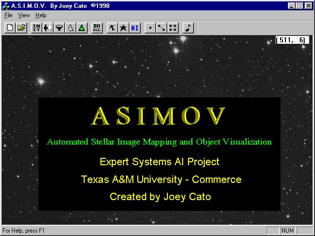
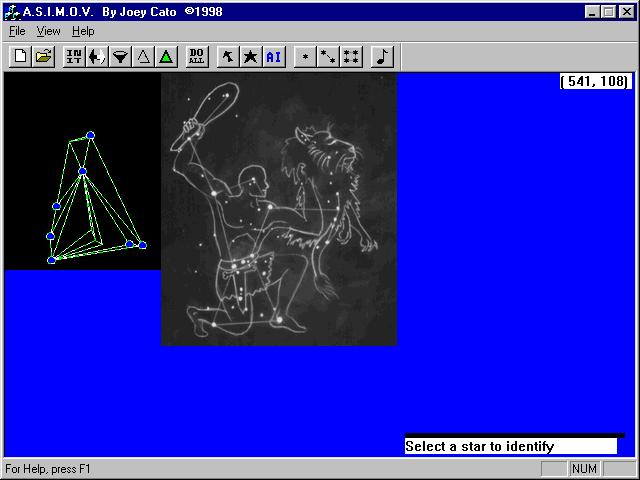

A.S.I.M.O.V. (Automated Stellar Image Mapping and Object Visualization) is a proof-of-concept expert system I created that imports bitmaps of the starry night, and then employs constellation recognition algorithms to identify them.
To achieve accurate recognition I applied a series of programmatic filters to each image beforehand, then devised a comparison algorithm which compared the triangle meshes of the star points. By relying on the familiar principle of similarity of triangles, I was able to find matches on sample photos, regardless of scale and orientation.
 